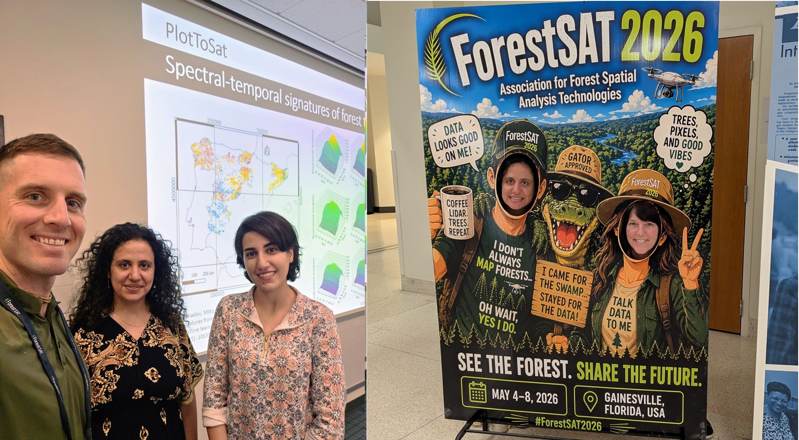
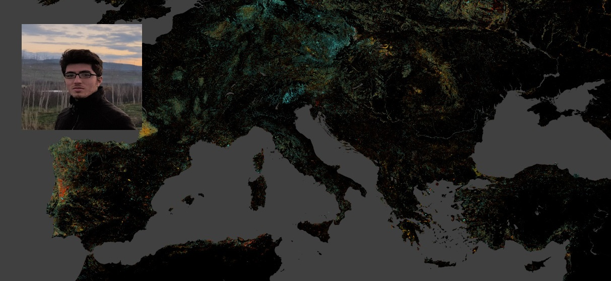
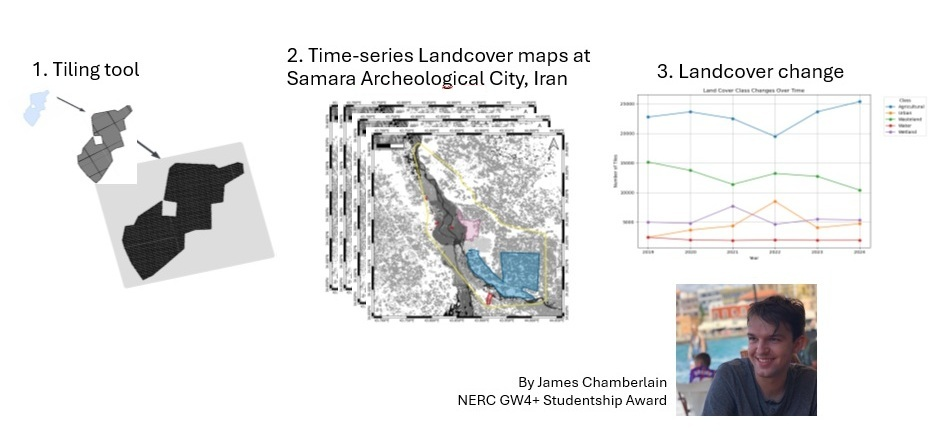

News & Updates
Updates and milestones from our lab.
Dr Milto Miltiadou participated in the well-established ForestSAT conference.

ForestSAT is an international conference focusing on Spatial Analysis Technologies for forest related applications. Dr Milto Miltiadou participated as a workshop instructor, where she engaged participants with PlotToSat’s newest capabilities. She also gave an oral presentation on the latest developments and applications of PlotToSat. It was also an honour to participate as a mentor, where she has the chance to share her personal journey with early career researchers. The next ForestSAT conference will be held 5-9 June, 2028 - Madrid, Spain.
More info about ForestSAT 2028Dr Benyamin Hosseiny joined DASOS' Vision Group!

Dr Benyamin Hosseiny has started working on his MSCA postdoctoral Fellowship (ForestFireAI) on "Large-scale Prediction of Forest Fire Drivers from Space Using Multi-source Remote Sensing Data and Artificial Intelligence Techniques"! The project is in collaboration with Dr Henrik Persson (Swedish University of Agricultural Sciences - SLU) and Dr Tommaso Jucker (Selva lab, University of Bristol). Looking forward to the innovative results of the project!
More info about ForestFireAIMr James Chamberlain has been awarded a NERC GW4+ PhD studentship!

James Chamberlain has been awarded a NERC GW4+ PhD studentship to work on "Mapping Geohazard Proximity and Risk Trends Around UNESCO Sites". The supervisory team consists of Dr Milto Miltiadou (University of Exeter), Dr Oktay Karakus (University of Cardiff), Dr Athos Agapiou (Cyprus University of Technology) and Dr Andrew Bell (Devon UNESCO Biosphere Reserve). James is expected to start his PhD journey in September 2026. Congratulations to James for getting funding through this high-competitive call.
Projects
Explore our ongoing and completed projects.
People
Meet the researchers, and alumni.
Tools
Explore the open-source tools developed by our research group.
Join us
Become a member or collaborate.